Pasporty slovenských měst: bez pasportu (nahoře, modře) a s pasportem (dole, červeně)
Řez zleva (A) doprava (B), ±10 m podél ulice, 10 px = 1 m. Silné čáry = okraje vozovky, tenké = ostatní hranice, žlutá = střed řezu, * = odhad. Ortofoto © GKÚ Bratislava, NLC (ZBGIS, CC BY 4.0).
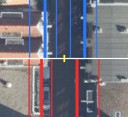
am1 · Willemsstraat (amsterdam)
bez BGT: chodnik 2.6* · parkovani 2 · pruh 2.4 · pruh 2.4 · chodnik 2.15*
s BGT: chodnik 2.1 · parkovani 1.85 · pruh 4.25 · chodnik 3.85
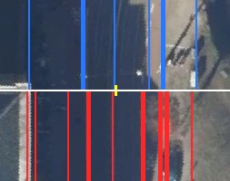
am3 · Roetersstraat (amsterdam)
bez BGT: chodnik 5.95* · tramvaj_v_pruhu 3.47 · tramvaj_v_pruhu 3.83 · cyklopruh 1.5 · chodnik 3.65*
s BGT: plocha 0.85 · chodnik 3.65 · cyklostezka 2.15 · tramvaj_v_pruhu 2.77 · tramvaj_v_pruhu 3.27 · cyklostezka 1.9 · parkovani 0.7 · chodnik 2.75
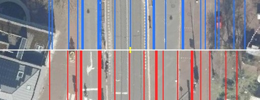
am5 · Haarlemmerplein (amsterdam)
bez BGT: plocha 0.6* · chodnik 3.3* · cyklostezka 1.8* · chodnik 0.9* · pruh 3.2 · plocha 0.5* · nastupiste 2.8 · tramvaj 3.1* · tramvaj 3.1* · delici 1.5* · krajnice 2.47 · pruh 3.33 · chodnik 3.65* · cyklostezka 0.9* · chodnik 2* · plocha 0.65* · stromorad 3* · plocha 2.2*
s BGT: chodnik 3.55 · cyklostezka 1.75 · plocha 0.9 · pruh 3.55 · plocha 0.4 · nastupiste 2.8 · tramvaj 2.92 · tramvaj 2.92 · delici 2.4 · krajnice 1.42 · pruh 2.9 · parkovani 2.78 · plocha 1.8 · cyklostezka 1.8 · chodnik 3.15 · stromorad 2.25
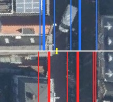
am6 · Kerkstraat (amsterdam)
bez BGT: chodnik 0.65* · parkovani 2.1 · pruh 3.17 · parkovani 1.73* · chodnik 3.35*
s BGT: chodnik 2 · pruh 3.55 · parkovani 2.05 · chodnik 3.05 · zelen 0.45
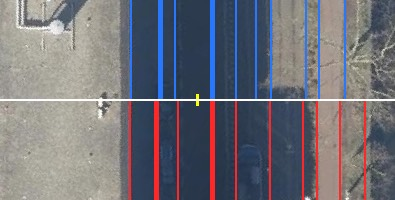
am7 · Marnixstraat (amsterdam)
bez BGT: chodnik 2.9* · cyklopruh 1.5 · pruh 3.7 · nastupiste 2.4 · tramvaj 2 · delici 1.45* · tramvaj 3.5* · plocha 1.35* · cyklostezka 2.6*
s BGT: chodnik 2.6 · parkovani 2.25 · pruh 3.4 · nastupiste 2.4 · tramvaj 3.35 · tramvaj 3.35 · zelen 1.35 · cyklostezka 2.35 · plocha 2.45
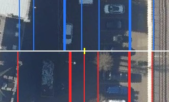
am8 · De Ruijterkade (amsterdam)
bez BGT: plocha 2.85* · chodnik 6* · pruh 3.37 · pruh 3.37 · parkovani 6.05 · chodnik 4.65*
s BGT: chodnik 10.2 · pruh 2.75 · pruh 2.75 · parkovani 6.1 · chodnik 4.5
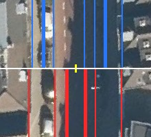
ro1 · Proveniersstraat (rotterdam)
bez BGT: chodnik 1.6* · cyklopruh 1.5 · pruh 4.5 · krajnice 1.5* · cyklopruh 1.5 · chodnik 2.55*
s BGT: chodnik 3.85 · cyklostezka 1.65 · pruh 2.75 · cyklostezka 1.45 · chodnik 3.85
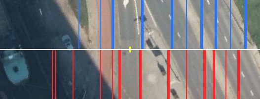
ro3 · Hertekade (rotterdam)
bez BGT: chodnik 4.3* · cyklostezka 2.5* · pruh 6 · delici 5.95* · pruh 3 · pruh 3 · delici 2.9* · pruh 3 · pruh 3
s BGT: nezname 0.55* · plocha 3.65 · chodnik 5.6 · cyklostezka 2.4 · chodnik 1.35 · pruh 4.2 · delici 5.75 · pruh 3.65 · pruh 3.65 · delici 1.85 · pruh 2.54 · pruh 2.54
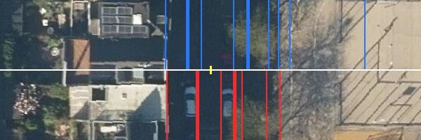
ro5 · Wollefoppenstraat (rotterdam)
bez BGT: chodnik 3.05* · parkovani 2* · pruh 4.6 · parkovani 2* · stromorad 3* · zelen 1.4* · chodnik 1.6* · plocha 10.72*
s BGT: chodnik 4.25 · pruh 3.37 · parkovani 1.98 · chodnik 1.1 · stromorad 3.45 · zelen 1.95 · chodnik 21.46
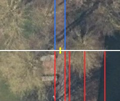
ro6 · (bez názvu) (rotterdam)
bez BGT: chodnik 2*
s BGT: chodnik 2 · zelen 0.91 · stromorad 3 · zelen 3.94
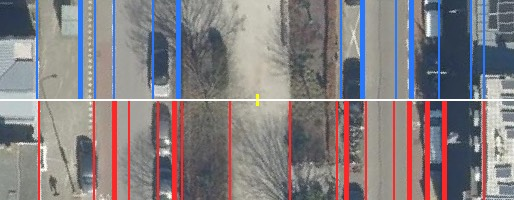
de1 · Nassauplein (denhaag)
bez BGT: chodnik 4.25* · cyklopruh 1.5 · krajnice 1.9* · pruh 3.9 · parkovani 2.5* · zelen 16.35* · plocha 2.05* · pruh 3.4 · cyklopruh 1.5 · plocha 2.8* · chodnik 3.2* · plocha 1.3*
s BGT: chodnik 5.5 · cyklostezka 2 · cyklopruh 1.5 · pruh 2.97 · parkovani 1.53 · chodnik 0.8 · zelen 4.8 · chodnik 6 · zelen 4.75 · chodnik 0.85 · parkovani 2 · pruh 2.85 · cyklopruh 1.5 · cyklostezka 1.75 · parkovani 1.75 · chodnik 3.95
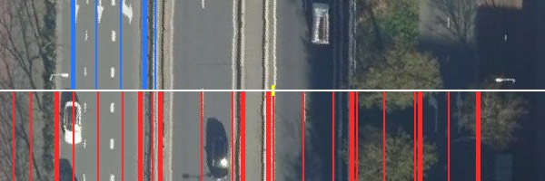
de2 · Prins Clauslaan (denhaag)
bez BGT: pruh 2.63 · pruh 2.63 · pruh 2.63 · nezname 1.24*
s BGT: chodnik 4.5 · cyklostezka 3.6 · stromorad 1.87 · chodnik 2.83 · krajnice 1.92 · pruh 2.7 · pruh 2.7 · krajnice 1.83 · chodnik 1.45 · plocha 0.75 · pruh 4.67 · pruh 3.4 · krajnice 1.03 · delici 2.85 · krajnice 0.62 · pruh 3.3 · pruh 3.3 · krajnice 1.98* · zelen 0.6 · stromorad 3 · zelen 3.35 · chodnik 0.5 · pruh 3.23 · pruh 3.23
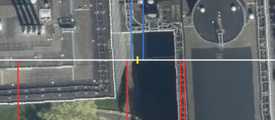
de3 · (bez názvu) (denhaag)
bez BGT: chodnik 2*
s BGT: plocha 18.15 · chodnik 8.9 · plocha 0.75
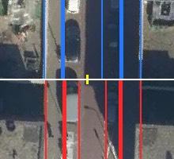
de4 · Rozenburgstraat (denhaag)
bez BGT: chodnik 2.3* · pruh 4.97 · parkovani 2.43* · chodnik 2.55*
s BGT: chodnik 2.3 · parkovani 1.85 · pruh 3.4 · parkovani 1.85 · chodnik 2.6
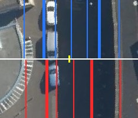
de5 · Westeinde (denhaag)
bez BGT: chodnik 3.3* · parkovani 2* · pruh 2.7 · pruh 2.7 · parkovani 2* · chodnik 3.4*
s BGT: chodnik 3.55 · parkovani 1.7 · pruh 2.92 · pruh 2.92 · chodnik 4.9
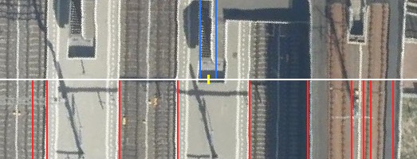
de6 · (bez názvu) (denhaag)
bez BGT: chodnik 2*
s BGT: plocha 1.77 · nastupiste 9.05 · plocha 7.3 · nastupiste 9.05 · plocha 7.3 · nastupiste 5.45 · nezname 1.5* · chodnik 0.9 · zelen 2.8
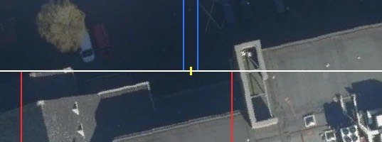
de7 · (bez názvu) (denhaag)
bez BGT: chodnik 2
s BGT: chodnik_kola 29.6
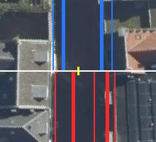
ut1 · Hamburgerstraat (utrecht)
bez BGT: chodnik 1.4* · pruh 5.4 · chodnik 1.55*
s BGT: chodnik 2.5 · pruh 3 · parkovani 1.75 · chodnik 1.1
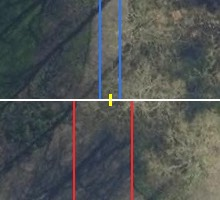
ut2 · (bez názvu) (utrecht)
bez BGT: chodnik 2*
s BGT: chodnik 5.75
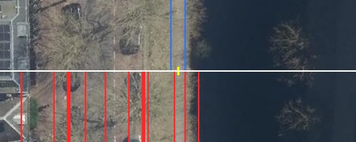
ut3 · (bez názvu) (utrecht)
bez BGT: chodnik 2*
s BGT: chodnik 4.6 · cyklostezka 2 · parkovani 2.43 · pruh 2.8 · pruh_piktokoridor 3.23 · parkovani 2 · chodnik 0.75 · zelen 3.65 · chodnik 1.5 · zelen 1.9*
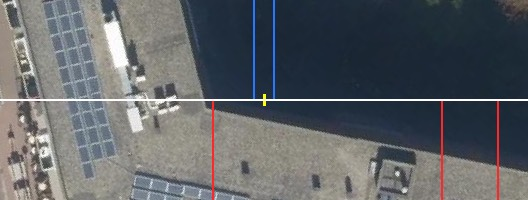
ut4 · (bez názvu) (utrecht)
bez BGT: chodnik 2*
s BGT: chodnik 22.9 · plocha 5.55*
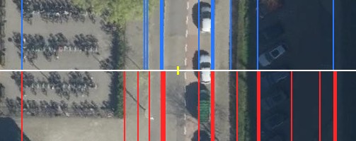
ut6 · Burgemeester Fockema Andreaelaan (utrecht)
bez BGT: plocha 17.27* · chodnik 0.35* · cyklostezka 2* · pruh_piktokoridor 5.35 · parkovani 1.9 · chodnik 2.6* · zelen 3.8* · plocha 10.73*
s BGT: plocha 14.47 · chodnik 1.9 · zelen 1.55 · cyklostezka 1.7 · plocha 0.35 · pruh_piktokoridor 5 · parkovani 1.9 · chodnik 3.5 · zelen 2.95 · parkovani 4.75 · obsluzna 3.95 · parkovani 2.1
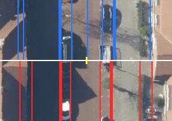
ha1 · Rozenhagenstraat (haarlem)
bez BGT: plocha 0.95* · chodnik 6* · parkovani 2 · pruh 2.5 · pruh 2.5 · parkovani 2 · chodnik 6*
s BGT: plocha 1.95 · chodnik 4.75 · parkovani 1.75 · pruh 4.85 · parkovani 1.8 · chodnik 4.8 · plocha 2
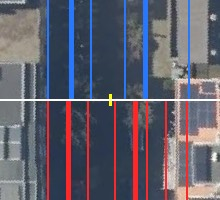
ha2 · Tetterodestraat (haarlem)
bez BGT: chodnik 2.25* · parkovani 2 · pruh 3.4 · parkovani 2 · chodnik 4.4*
s BGT: chodnik 2 · parkovani 2 · pruh 2.75 · parkovani 2 · zelen 1.2 · chodnik 1.9 · plocha 2.1
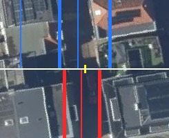
ha3 · Zuid Brouwersstraat (haarlem)
bez BGT: plocha 5.55* · pruh 2.7 · pruh 4.7
s BGT: pruh 2.5 · pruh 2.5
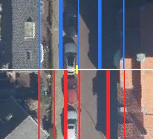
ha4 · Nicolaas van der Laanstraat (haarlem)
bez BGT: chodnik 2.95* · pruh 2.57 · pruh 3.03 · chodnik 3.55*
s BGT: plocha 2.2 · chodnik 1.6 · parkovani 2 · pruh 4.1 · chodnik 2.35
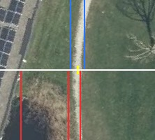
le1 · (bez názvu) (leiden)
bez BGT: chodnik 2*
s BGT: zelen 6.8 · chodnik 1.7
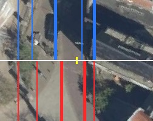
le2 · 1e Binnenvestgracht (leiden)
bez BGT: zelen 2.28* · chodnik 3.8* · pruh 4.4 · parkovani 2*
s BGT: zelen 3.08 · chodnik 4.05 · pruh 3.75 · chodnik 1.65
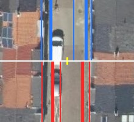
le3 · Oranjestraat (leiden)
bez BGT: chodnik 1.45* · pruh 3.8 · parkovani 2* · chodnik 0.95*
s BGT: chodnik 1.7 · parkovani 1.3 · pruh 3.6 · chodnik 1.15
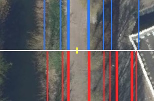
le4 · Pesthuislaan (leiden)
bez BGT: stromorad 3.2* · zelen 1.55* · pruh 4 · stromorad 3* · zelen 1.6* · plocha 5.35*
s BGT: stromorad 3 · zelen 1.1 · pruh 4.15 · stromorad 3 · zelen 1.15 · plocha 1.35 · obsluzna 3 · plocha 0.85